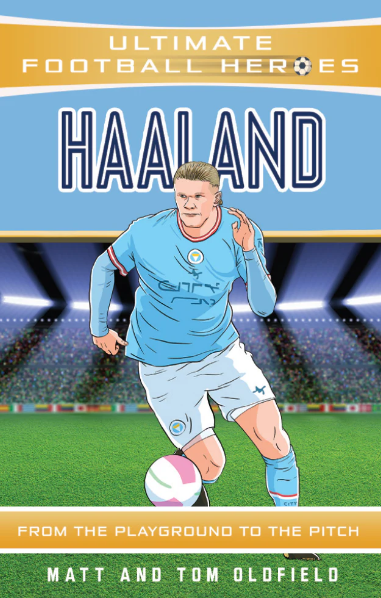

HAALAND POWER CARD

HAALAND
HAALAND
CARD.
Erling Haaland is a prominent professional footballer known for his exceptional goal-scoring abilities and physical prowess. Born on July 21, 2000, in Leeds, England, Haaland represents Norway at the international level and plays as a striker for top clubs in Europe. As he continues to develop and mature in his career, Erling Haaland remains a key figure in the football world, with expectations of achieving even greater success both individually and with his respective teams. His journey exemplifies the blend of talent, dedication, and ambition that define elite footballers in the modern era.